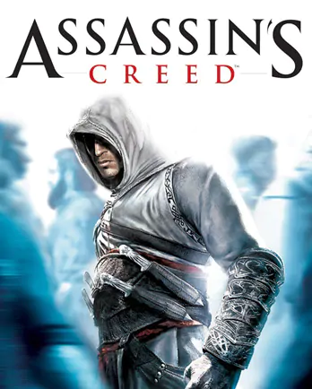

Assasins Creed 1 |
||
|---|---|---|
|  | Sinopsis: Desmond Miles, un cantinero, es secuestrado por la compañía Industrias Abstergo para su uso como sujeto de prueba en el "Animus", un dispositivo que puede simular memorias genética. Abstergo tiene la intención de poner a Desmond en el dispositivo para recordar los recuerdos de su antepasado, Altaïr Ibn-La'Ahad, miembro de la Hermandad de Asesinos en el año 1191, que vivió durante la Tercera Cruzada en Tierra Santa. Inicialmente, Desmond tiene problemas para adaptarse al dispositivo, pero finalmente revive las hazañas de Altaïr en los próximos días. Luego, el juego cambia principalmente al punto de vista de Altaïr, con transiciones ocasionales a Desmond, debido a problemas con el Animus o la aparición del efecto sangrado. |
Desarrollador:Ubisoft Montreal Plataformas: PlayStation 3, Xbox 360, Microsoft Windows Año: 2007 Duracion:15 horas aprox Pais:Estados Unidos |
Criticas Profesionales:Francesca RojoEl juego mas infravalorado y olvidado de la saga, sin duda el Assassins Creed más puro y real que existe. Aquí reside la auténtica esencia de la saga, su credo, sus normas, su forma de ser, su combate, sus mecánicas, su ambientación, sus ubicaciones, su mapa, su historia, su contexto lo hacen para mí el mejor Assassins Creed junto con el 2 y la Hermandad. |
Trailer |
Obtener:AlquilarComprar |
Registrate/Iniciar Sesion